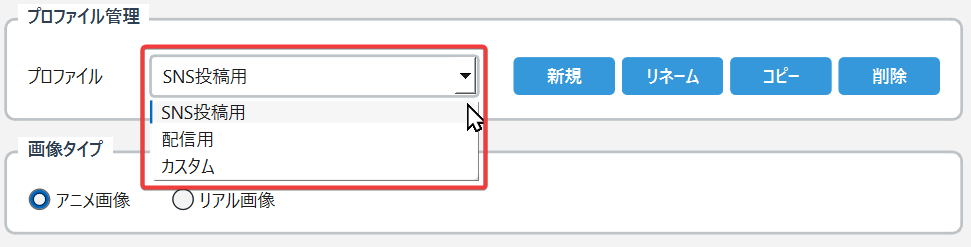
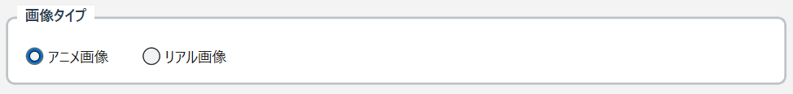
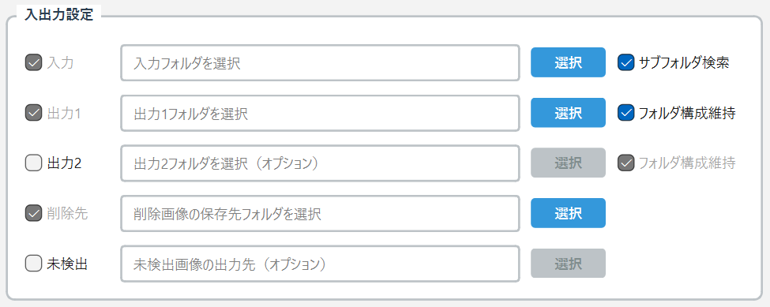
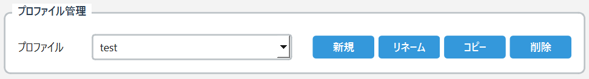

5. 処理設定（出力1）
検出設定の下にある処理設定（出力1）では、第1の出力に対する処理方法を詳細に設定します。

処理タイプ選択
まず、処理タイプを選択します。
処理タイプ個別の設定
選択した処理タイプに応じて、以下の詳細設定が表示されます。
モザイクを選択した場合の設定項目

- 粗さ（2-64）：モザイクのマス目の大きさ。数値が大きいほど粗いモザイクになります
- スケール比率（0.5-2.0）：検出領域の拡大率。1.0で元のサイズ、2.0で2倍の範囲にモザイクをかけます
- 境界ぼかし（0-40）：モザイクの境界をぼかす強さ。0で境界がはっきり、数値が大きいほど境界がなめらかになります
- 境界タイプ（楕円/矩形）：モザイク領域の形状を選択
黒塗り・白塗りを選択した場合の設定項目

- 境界ぼかし（0-40）：塗りつぶしの境界をぼかす強さ
- 境界タイプ（楕円/矩形）：塗りつぶし領域の形状を選択
ぼかしを選択した場合の設定項目

- ぼかし強度（10-200）：ぼかしの強さ。数値が大きいほど強くぼけます
- 境界ぼかし（0-40）：ぼかし領域の境界をなめらかにする強さ
6. 処理設定（出力2）
出力2を有効にした場合、第2の出力に対する処理方法を設定できます。設定項目は出力1と同じです。

出力1と異なる処理タイプや設定値を選択することで、1回の処理で2種類の出力を同時に生成できます。
例えば：
というような使い分けが可能です。
7. その他の設定
処理設定の下にあるその他の設定では、画像処理に関する追加オプションを設定できます。

検出部分のみ
- チェックボックスをオンにすると、検出された部分の画像のみを別途保存します
- 検出部分の確認や学習用データの作成などに活用できます
JPG画質（1-100）
透かし
- チェックボックスをオンにすると、出力画像に透かしを追加します
- 透かしの内容は固定で「Processed by AutoMozaRaku」と表示されます
8. 実行ボタン
設定パネルの最下部には実行に関するボタンが配置されています。

処理開始ボタン
- 入力フォルダ内のすべての画像が自動的に処理されます
手動処理モードボタン
- 画像を1枚ずつ確認しながら処理する場合に使用します
- 詳細は「手動処理モード 詳細ガイド」を参照してください
右側：プレビューエリア
メイン画面の右側には、処理前後の画像を確認できるプレビューエリアがあります。

プレビューエリアの構成
画像表示エリア
- 初期状態では「画像を選択してください」と表示されます
画像選択ボタン
- プレビューエリア上部の「画像選択」ボタンをクリックします
- ファイル選択ダイアログが開き、プレビューしたい画像を選択できます
切り替えボタン
- 「並べて表示」ボタン：処理前後の画像を左右に並べて表示
処理ボタン
- クリックすると、現在の設定で選択中の画像を処理します
プレビュー機能の活用方法
- 設定の事前確認
- 本番処理の前に、サンプル画像で設定の効果を確認できます
- モザイクの粗さやぼかしの強度など、視覚的に調整できます
- 検出精度の確認
- 複数設定の比較
- 設定を変更して再度「処理」ボタンをクリックすることで、異なる設定での結果を比較できます
基本的な使い方の流れ
ここでは、オートモザラックの基本的な使用手順を説明します。
ステップ1：画像の準備
- 処理したい画像を1つのフォルダにまとめます
- 対応形式：JPG、PNG、BMP、GIF
- サブフォルダがある場合は、「サブフォルダ検索」のチェックを確認
ステップ2：プロファイルの選択

- 用途に応じてプロファイルを選択
ステップ3：画像タイプの選択

- 処理する画像の種類を選択
ステップ4：フォルダの設定

- 入力フォルダの選択
- 出力フォルダの選択
ステップ5：検出設定の確認

- 検出対象のチェックボックスを確認
- 必要に応じて判定値を調整
ステップ6：処理設定の選択
- 処理タイプを選択（モザイク、黒塗り、白塗り、ぼかし）
- 選択したタイプに応じて詳細設定を調整
ステップ7：プレビューで確認（推奨）
- 右側のプレビューエリアで「画像選択」をクリック
- サンプル画像を選択
- 「処理」ボタンをクリック
- 「処理後」ボタンで結果を確認
- 設定を調整して再度確認（必要に応じて繰り返し）
ステップ8：処理の実行
- 設定が完了したら「処理開始」ボタンをクリック
- 処理進捗が表示されます
- 完了後、出力フォルダで結果を確認
処理時間の目安
- GPU環境（NVIDIA GeForce）：約0.2秒/枚
※処理時間は画像サイズやPCの性能により異なります
高度な機能
プロファイル管理の活用
プロファイル機能を使いこなすことで、用途別の設定を効率的に管理できます。

カスタムプロファイルの作成例
例1：Twitter投稿用プロファイル
- 「新規」ボタンをクリック
- 名前を「Twitter投稿用」に設定
- 設定内容：
例2：アーカイブ保存用プロファイル
- 「新規」ボタンをクリック
- 名前を「アーカイブ保存用」に設定
- 設定内容：
複数出力の活用
出力2を有効にすることで、1回の処理で2種類の結果を得られます。
活用シーン
シーン1：公開用と保存用を同時作成
シーン2：異なるプラットフォーム向け
検出部分のみ保存機能
「その他の設定」で「検出部分のみ」を有効にすると、検出された部分の画像を別途保存できます。
活用方法
- 検出精度の確認：どの部分が検出されたか視覚的に確認
- 学習データの作成：AI モデルの改善用データとして活用
バッチ処理のテクニック
大量の画像を効率的に処理するためのテクニックを紹介します。
フォルダ構成の工夫
画像フォルダ/
├── アニメ画像/
│ ├── SNS用/
│ └── 配信用/
└── リアル画像/
├── 強め処理/
└── 軽め処理/
処理順序の最適化
- 類似画像をまとめる
- テスト処理を行う
- 段階的に処理
トラブルシューティング
起動・認証関連
Q: ツールが起動しない
A: 以下を確認してください：
- OneDriveなどのクラウドフォルダに置いていないか確認
Q: Discord認証でエラーが出る
A: 以下を試してください：
処理関連
Q: 検出されない部分がある
A: 判定値を調整してください：
Q: 誤検出が多い
A: 以下の対処を試してください：
Q: 処理速度が遅い
A: 以下を確認してください：
- GPU（NVIDIA GeForce）が認識されているか確認
- ウイルス対策ソフトのリアルタイムスキャンを一時的に無効化
出力関連
Q: 出力画像が保存されない
A: 以下を確認してください：
- OneDriveなどのクラウド同期フォルダを避ける
Q: 画質が劣化する
A: JPG画質設定を確認してください：
エラーメッセージ対処法
「GPUが見つかりません」
- NVIDIA GeForce以外のGPUでは表示されます（正常）
「メモリ不足」
「ファイルアクセスエラー」
手動処理モード 詳細ガイド
手動処理モードは、画像を1枚ずつ確認しながら処理できる機能です。
手動処理モードの起動

- メイン画面で必要な設定を完了
- 「手動処理モード」ボタンをクリック
- 手動処理モード画面が開きます
画面構成

左側：画像リスト
中央：プレビューエリア
右側：操作パネル
画像情報
検出結果の調整
アクションボタン
手動処理の流れ
- 画像の確認
- 検出結果の調整（必要な場合）
- アクションの選択
- 次の画像へ
便利な機能
キーボードショートカット
一括操作
フィルター機能

手動処理モードの活用シーン
- 重要な画像の確実な処理
- 学習・調整作業
- 選別作業
FAQ（よくある質問）
基本的な質問
Q: 無料で使えますか？
A: はい、基本機能は無料でご利用いただけます。Discord認証が必要ですが、料金は発生しません。
Q: Mac版はありますか？
A: 現在はWindows版のみですが、Mac版は2025年7月中に対応予定です。
Q: 商用利用は可能ですか？
A: 利用規約に従った範囲内での商用利用は可能です。詳細は公式サイトの利用規約をご確認ください。
技術的な質問
Q: どんな画像形式に対応していますか？
A: JPG、PNG、BMP、GIF形式に対応しています。出力はJPGまたはPNG形式です。
Q: 動画の処理はできますか？
A: 現在のバージョンでは静止画のみ対応しています。動画対応は今後のアップデートで検討中です。
Q: 一度に何枚まで処理できますか？
A: 枚数制限はありませんが、メモリとディスク容量の範囲内での処理となります。
プライバシー・セキュリティ
Q: 画像はどこかにアップロードされますか？
A: いいえ、すべての処理はローカル（お使いのPC内）で完結します。画像が外部に送信されることはありません。
Q: Discord認証は安全ですか？
A: はい、Discord公式のOAuth2認証を使用しており、パスワード等の機密情報は取得しません。
使い方のコツ
Q: 最適な設定値を教えてください
A: 画像の種類や用途により異なりますが、以下が目安です：
Q: 処理を高速化する方法は？
A: 以下の方法があります：
お問い合わせ
サポート情報
オートモザラックに関するお問い合わせは、以下の方法でお受けしています。
公式Discord サーバー
最も迅速なサポートを受けられる方法です。
メールサポート
個別の詳細なサポートが必要な場合
- メールアドレス：support@automozaraku.com
お問い合わせの際の注意事項
スムーズなサポートのため、以下の情報をお知らせください：
- 使用しているバージョン
- OS の種類（Windows 10/11）
- エラーメッセージの内容（スクリーンショット推奨）
- 問題が発生した際の操作手順
アップデート情報
最新情報は以下でご確認いただけます：
- 公式サイト：https://automozaraku.com
オートモザラックは継続的に改善を行っています。皆様のフィードバックをお待ちしております。
最終更新日：2024年12月
{kind=link}
{kind=link}
{kind=link}
{kind=link}